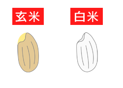

2018年11月号
「玄米」と「米ヌカ」のすばらしい関係とは？

「新米」が出回る季節がやってきました。
「新米」といっても「会社の新人」さんのことではありませんよ。
「新米」といえば、「米ヌカ」という言葉がありますが、どんな「ヌカ」なのか、知らない人もいるのでは？
お米は「種子（たね）があり、その種子が芽となり、成長する部分が「胚芽」で、この胚芽が付いたままのお米を「玄米」といいます。
そしてこの「玄米」の表面には粘り気のあるものが付いていて、これを「米ヌカ」または「肌ヌカ」と呼び、一般的には「ヌカ」と省略する「お米の肌に付いている粘り気」のことです。
この「米ヌカ」には、粘り気とともにヌカ臭さもあることから「胚芽」と「米ヌカ」を取って「精米」にしますが、精米にも粘り気の強い「米ヌカ」が少しだけ残っていることから、この臭みを取るためにお米を洗ってから「ごはん」を炊きます。
しかし「ヌカ臭さ」が少し残る「米ヌカ」には、「うま味」や多くの「栄養素」が含まれていますので、お米を洗いすぎないよう注意してください。
米ヌカの主な栄養素としては、「ビタミンB1、ビタミンB2、ナイアシン、ビタミンE、ミネラル」などがあり、「老化防止、コレステロール値の低下、排便の促進、生活習慣病の予防、肌のうるおい」といった効果が期待できます。
ということで、皆さんもおわかりのように、このような栄養素たちがたくさん凝縮しているのが「玄米」というわけです。
「白米」だけでなく、「玄米」にもっとスポットライトを照らしてくれる「玄人（くろうと）」がたくさん現れることを願っていま～す！！